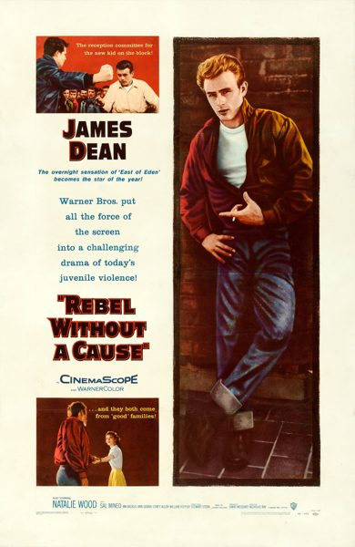

Rebel Without a Cause
Starring: James Dean, Natalie Wood, Sal Mineo
Director: Nicholas Ray
Writer: Stewart Stern, Irving Shulman, Nicholas Ray
Producer: David Weisbart
Rebel Without a Cause is a 1955 American coming-of-age melodrama film, directed by Nicholas Ray. The film stars James Dean, Natalie Wood, Sal Mineo, Jim Backus, Ann Doran, Corey Allen, William Hopper, and Nick Adams. It is also the film debut of Dennis Hopper, albeit in a minor role. It was filmed in the then recently introduced CinemaScope format.
Trivia
- Nominated for: Academy Award for Best Supporting Actress; Academy Award for Best Supporting Actor; Academy Award for Best Story.
- Warner Brothers had bought the rights to Lindner's book, intending to use the title for a film.
- Attempts to create a film version in the late 1940s eventually ended without a film or even a full script being produced.
- The film, as it later appeared, was the result of a totally new script written in the 1950s that had nothing to do with the Brando test.
Filming Locations
- Los Angeles
- Santa Monica
Previous Showings
1 Run • 1 Festival
All runs on record (1):
- August 24 - 25, 2000Summer 2000w/ A Place in the Sun